2006-2015
L'ÉTAT ISLAMIQUE
une histoire violente
Le 29 juin 2014, un groupe djihadiste autobaptisé «Etat islamique» proclamait le califat sur un territoire à cheval entre Irak et Syrie. Un an plus tard, il est présent dans une douzaine de pays.
Acte de naissance du groupe en Irak
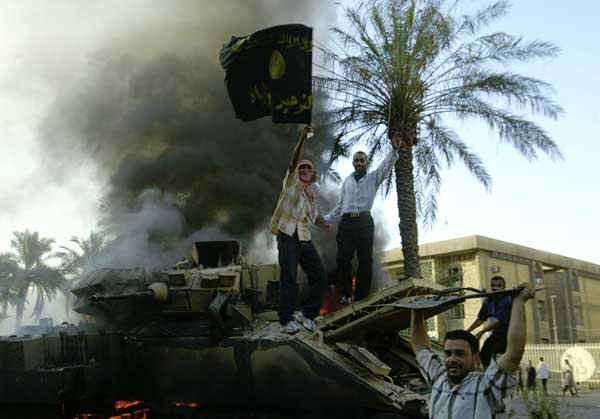
Un "Conseil consultatif des Moudjahidines en Irak", composé d’Al-Qaida en Irak, d’autres groupes djihadistes et d’une trentaine de tribus sunnites, se constitue en "Etat islamique en Irak", déterminé à éradiquer la domination chiite au Proche-Orient.
Une déclaration de guerre à l’Amérique
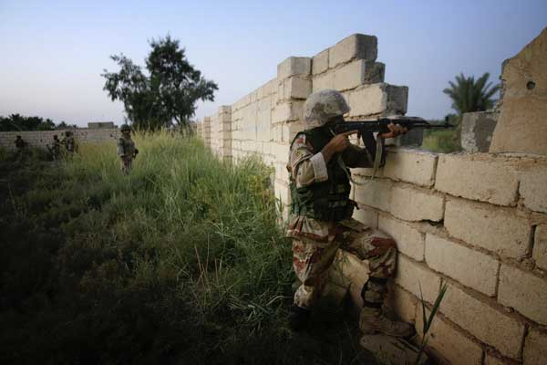
Le combat des djihadistes en Irak remonte à l’invasion américaine de 2003. En juin 2006, l’armée américaine réussit à tuer Abou Moussab al-Zarkaoui, le chef d'Al-Qaida en Irak, cauchemar des Américains et d’une grande partie de la population irakienne. Des luttes intestines pour la domination du djihad vont suivre au sein du groupe.
A LIRE. Ruptures entre les idéologues d'Al-Qaida et ceux du djihad (11.03.2008)
L’émergence d’Al-Bagdadi
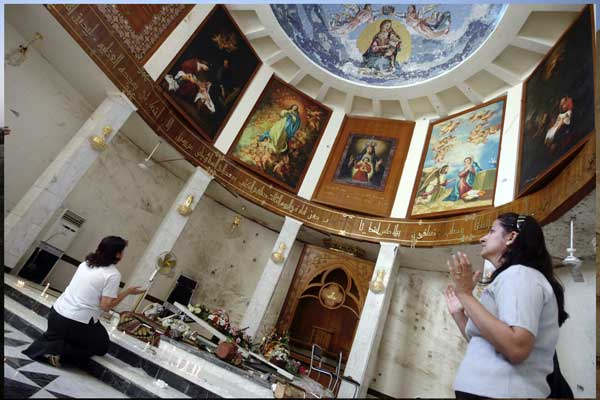
Les deux successeurs de Al-Zarkaoui à la tête d’Al-Qaida en Irak, Abou Omar al-Bagdadi et Abou Hamza al-Mouhajer, sont à leur tour tués par les Etats-Unis et leurs alliés irakiens. Le groupe se fond progressivement dans "l’Etat islamique en Irak”, désormais dirigé par Abou Bakr al-Bagdadi, un leader énigmatique qui évite les apparitions publiques. Les attentats continuent, comme celui, emblématique, contre la cathédrale syriaque de Bagdad à la veille de la Toussaint (58 morts, le plus grave attentat en Irak depuis 2003).
La Syrie dans la tourmente du "Printemps arabe"
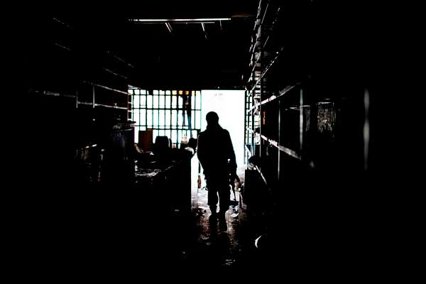
Après le développement de révoltes démocratiques en Tunisie, en Egypte, au Yémen et en Libye, la contestation arrive en Syrie. Le président Bacher el-Assad choisit la manière forte et engage une féroce répression. Des militants d’Al-Qaida en Irak commencent à débarquer en Syrie pour se joindre à l’insurrection.
A l’automne 2011, les Etats-Unis promettent 10 millons de dollars de récompense à qui livrera Al-Bagdadi.
Première grande conquête: Raqqa (Syrie)
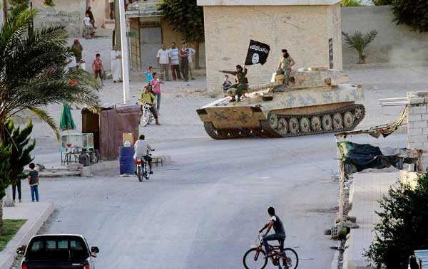
La capitale de la province du centre-est de la Syrie est la première grande ville syrienne à tomber aux mains de l’Etat islamique en Irak, et lui sert de quartier général, malgré les bombardements de l’armée loyaliste. Dès les premiers jours, l’EI y impose une politique de terreur, vitrine du régime islamiste.
Pétrole, rançons et trafics

La puissance de l’EI vient notamment de ses sources de financement : exploitation des puits de pétrole dont il s’empare, trafic d’antiquités, prises d’otages avec des rançons se comptant en millions de dollars, brigandage, racket et levée d’impôts sur les territoires qu’il contrôle. L’EI reçoit aussi beaucoup d’argent de donateurs privés sunnites des pays du Golfe.
L'alliance avec Al-Qaida
Abou Bakr al-Baghdadi annonce que l’Etat islamique en Irak devient "l’Etat islamique en Irak et au Levant", EIIL (ISIS en anglais), après un rapprochement avec le front Al-Nosra, le groupe représentant Al-Qaida en Syrie.
Un pénible ralliement à l’EI
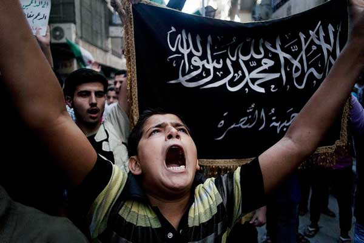
Fin 2013, la politique sectaire du premier ministre chiite irakien Nouri al-Maliki et les exactions de l’armée de Bagdad provoquent peu à peu la révolte de tribus sunnites, notamment dans la région d’Al-Anbar (ouest du pays) qui soutiennent militairement l’avancée territoriale de l’EIIL vers les régions pétrolières et même vers Bagdad. Bon nombre de sunnites accueillent dans un premier temps les djihadistes de l'EIIL en libérateurs, d’autant qu’ils arrivent avec du ravitaillement
L’EI se renforce en Irak en conquérant Fallujah et Ramadi
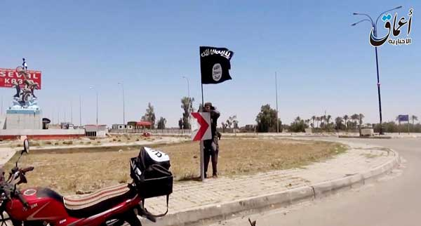
L’EIIL s’empare de ces deux villes sunnites à 70 et 110 kilomètres seulement à l’ouest de Bagdad et entreprend de se lancer à l’assaut du nord et de l’ouest du pays.
A LIRE. Deux villes irakiennes investies par Al-Qaïda (03.01.2014)
Luttes intestines entre islamistes
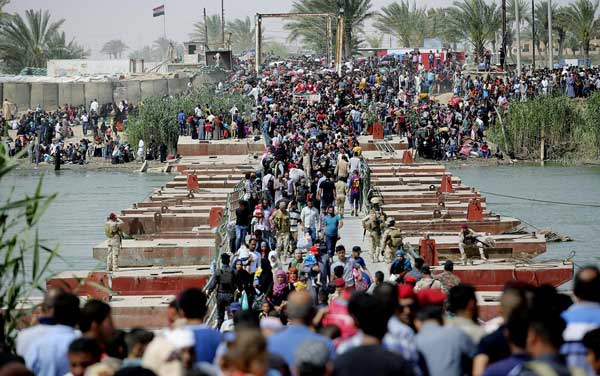
Alors que les deux mouvements s’étaient rapprochés, le chef d’Al-Qaida Aymane Al-Zawahiri désavoue clairement l’EIIL en février 2014, et lui demande de quitter la Syrie. Les deux groupes opèrent depuis de façon séparée, quand ils ne se font pas la guerre en Syrie.
Prise de Mossoul, et offensive éclair au nord et à l’ouest de l’Irak
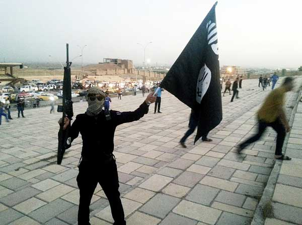
Quelques centaines de combattants de l’EIIL s’emparent de Mossoul (2 millions d’habitants) et des dépôts d’armes de cette ville riche et stratégique à l’intersection des routes d’Irak, de Syrie et de Turquie. Cinq cent mille personnes fuient en deux jours. L’EIIL revendique aussi peu après le massacre d’au moins 1600 cadets de l’école militaire du camp Speicher, aux abords de Tikrit. Les Etats-Unis annoncent dans la foulée l’envoi de 300 conseillers militaires en Irak.
Une force militaire redoutable
L'EI compterait 5000 à 6000 combattants en Irak et de 6000 à 12'000 en Syrie. Ses chefs sont des anciens de la guerre d’Afghanistan, durant laquelle ils se sont formés à la guérilla, et d’anciens cadres du régime baasiste, habitués de la guerre classique. L’EI compte aussi des centaines de combattants venus d’Europe, extrêmement motivés et prêts à mourir. Tout l'éventail des compétences au combat est représenté. L'EILL disposse aussi d'un arsenal impressionnant, volé aux loyalistes ou acheté.
A LIRE. Pourquoi l'Etat islamique constitue une force militaire redoutable (02.06.2015)
Proclamation du califat
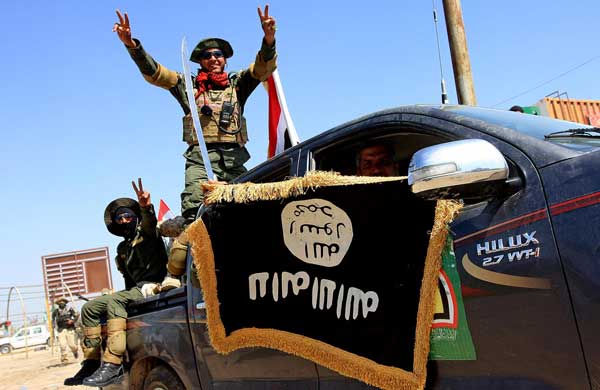
Dans un enregistrement audio diffusé sur Internet, l’EIIL désigne son chef Al-Baghdadi comme "calife » et donc «chef des musulmans partout» dans le monde. Le mouvement se fait désormais appeler "Etat islamique" en supprimant donc toute référence géographique limitative: l’EIIL veut en finir avec les frontières des États actuels, héritées des accords Sykes-Picot de 1916 entre la France et la Grande-Bretagne. Le 30, Tikrit tombe, la ville natale de Saddam Hussein, tout un symbole.
Une propagande très professionnelle
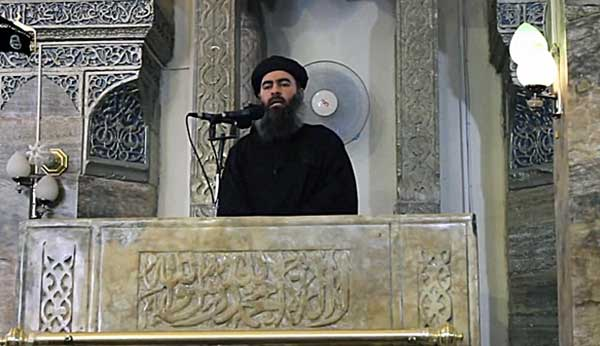
Le 1er juillet, Abou Bakr al-Baghdadi apparaît pour la 1ere fois dans une vidéo sur Internet, et le même jour paraît le 1er numéro de "Dabiq", la revue en ligne des djihadistes. Sur les réseaux sociaux, qu’elle utilise pour recruter des combattants occidentaux, sur Internet, où elle publie des vidéos d’une qualité professionnelle, l’organisation fait preuve d’une maîtrise très sophistiquée de son message.
A LIRE. Comment l’Etat islamique contourne la censure sur les réseaux sociaux (23.08.2014)
"L’Administration de la sauvagerie", manuel du parfait djihadiste (02.06.2015)
Epuration ethnique des yazidis et des chrétiens
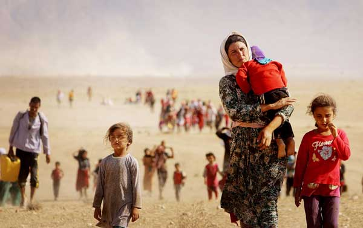
L’EI s’empare du Sinjar, une région de 300 000 habitants. Des dizaines de milliers de chrétiens et de yazidis se sauvent dans les montagnes aux environs. Des milliers de femmes sont violées et réduites en esclavage, des milliers d’hommes sont tués.
Premières menaces américaines
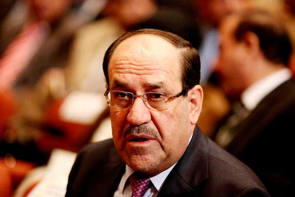
Le président Obama parle d’un “potentiel acte de génocide” et autorise de premières frappes aériennes dans le nord de l’Irak. Le 1er ministre Nouri al-Maliki de plus en plus contesté démissionne.
Exécution de James Foley
Le monde sidéré découvre une vidéo terrifiante montrant le journaliste américain James Foley, 40 ans, enlevé en novembre 2012 en Syrie, décapité par un homme cagoulé parlant avec l’accent anglais, en représailles aux bombardements américains.
A LIRE. James Foley, entre censure virale et voyeurisme morbide (21.08.2014)
Premiers raids aériens
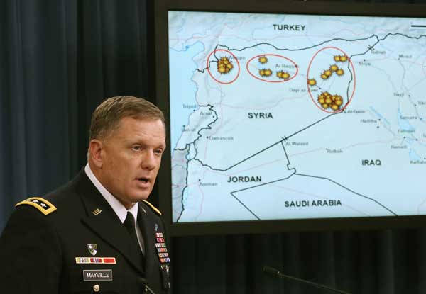
Au sommet de l'OTAN à Newport, au Pays de Galles, les Etats-Unis annoncent la formation d'une coalition internationale contre les djihadistes. Dix pays occidentaux, dont la Grande-Bretagne, en constituent le "noyau dur".
Le 23 septembre, premiers raids aériens en Syrie des Etats-Unis et de leurs alliés contre des positions de l'Etat islamique, dans les provinces de Daïr az Zour et de Rakka.
Début de la bataille de Kobané
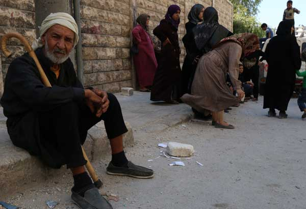
La ville située à la frontière turco-syrienne est âprement défendue par les troupes kurdes des YPG et du PKK.
A LIRE. notre grand format Le piège de Kobané (septembre 2014)
Expansion hors d’Irak et de Syrie

L’EI commence à essaimer au Moyen-Orient et en Afrique du nord. En Egypte, le groupe Ansar Baït al Makdis qui multiplie les attaques meurtrières contre les forces de l'ordre, prête allégeance à al-Baghdadi. Au même moment, l’organisation gagne du terrain en Libye, à Derna et Syrte.
Premier échec de l’EI à Kobané, symbole de la résistance
Après des mois d'affrontements, l’EI perd des centaines de combattants à Kobané, tués par les forces kurdes appuyées par les frappes de la coalition internationale dirigée par les Etats-Unis.
Première action spectaculaire en Libye
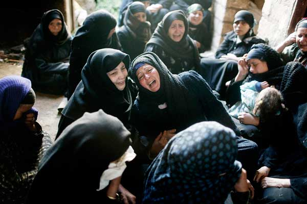
L’EI publie une vidéo montrant l’exécution de 21 chrétiens égyptiens sur une plage de Libye. Le lendemain, l’Egypte bombarde des cibles de l’EI en Libye.
A LIRE. James Foley, entre censure virale et voyeurisme morbide (21.08.2014)
Le saccage archéologique comme arme de guerre

En février 2015, l’EI diffuse une vidéo montrant des destructions volontaires dans le musée archéologique de Mossoul, provoquant un torrent de condamnations. Plusieurs oeuvres sont détruites et des sites historiques sont menacés en Syrie, en Irak et ailleurs.
Le 18 mars, un attentat dans le musée du Bardo de Tunis fait 23 morts.
A VOIR. Carte interactive du patrimoine menacé par l'EI
A LIRE. Le trafic juteux des oeuvres d’art (11.03.2015)
Les forces irakiennes regagnent Tikrit
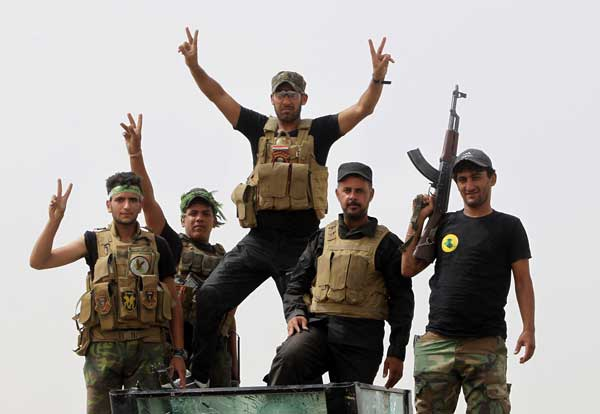
Première bataille gagnée par les forces de Bagdad, qui regagnent une ville majeure, et espèrent que cela ouvre la voie à une reconquête à venir de Mossoul.
L’EI s’empare de Ramadi, sur la route de Bagdad, et de Palmyre, en Syrie
La rapidité de son attaque-éclair sur Ramadi, qui jette sur les routes des dizaines de milliers de civils, montre que l’EI n’est pas affaibli comme des observateurs le pensaient, à l’inverse il contrôle désormais plus du tiers du territoire irakien.
En Syrie, l'Etat islamique s'empare de Palmyre, où se trouve le site archéologique le plus célèbre du pays, située à 240 kilomètres au nord-est de Damas
Offensive surprise à Kobané
Perdue en janvier, la ville frontière est de nouveau attaquée par l’EI.
Des attentats en France, en Tunisie et au Koweit
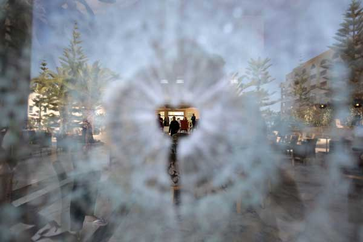
En Tunisie l'attentat sur la plage de la région touristique de Sousse, qui a tué 39 personnes, est revendiqué par l'EI.
A LIRE. "Les autorités tunisiennes ont refusé jusqu’ici de reconnaître la réalité" (27.06.2015)
CRÉDITS
Une timeline de Catherine Frammery
Code: Jean Abbiateci et Libédata
Iconographie: David Wagnières
Photos: AFP, Reuters, Keystone